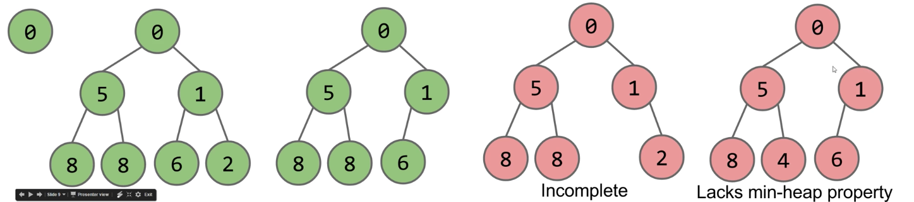
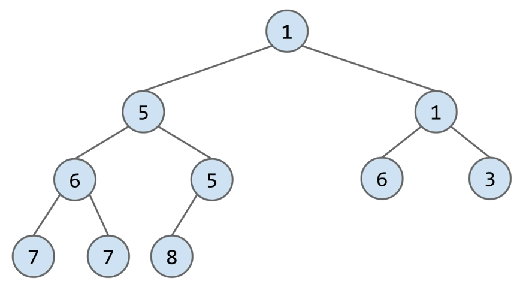
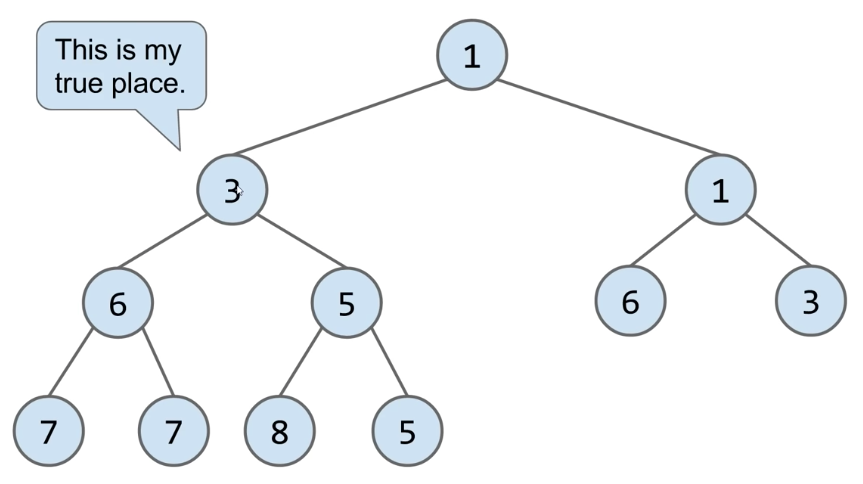
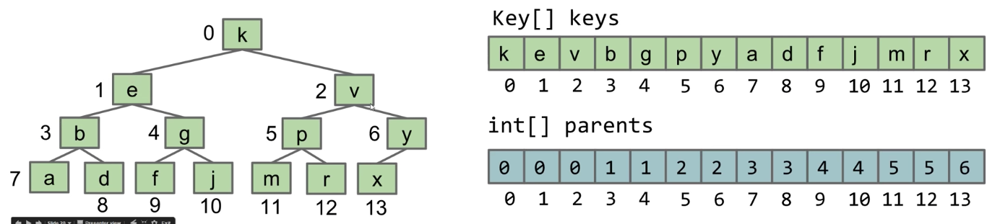
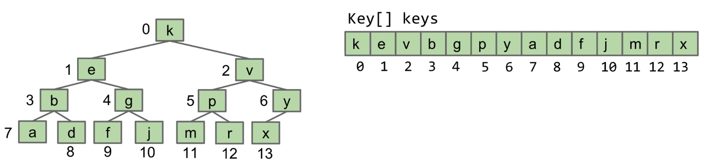
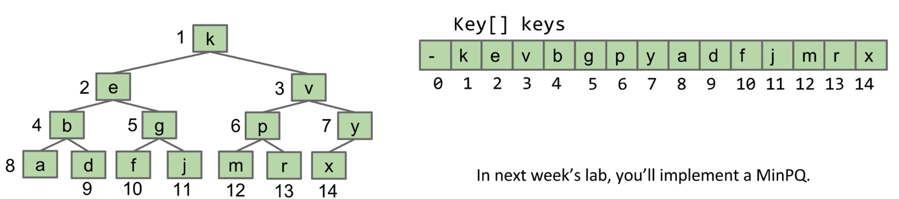
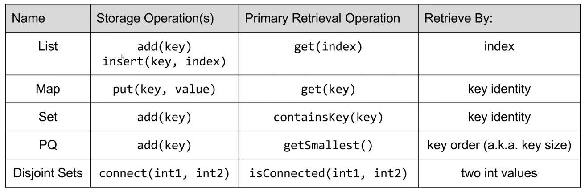
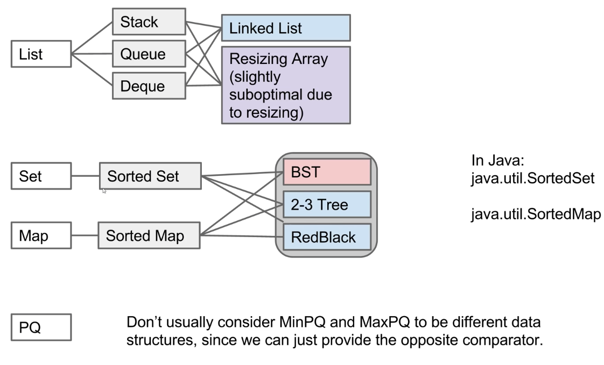

Lecture 21: Heaps and PQs
10/14/2020
The Priority Queue Interface
The Priority Queue Interface
/** (Min) Priority Queue: Allowing tracking and removal of the
* smallest item in a priority queue */
public interface MinQP<Item> {
// Adds the item to the priority queue
public void add(Item x);
// Returns the smallest item in the priority queue
public Item getSmallest();
// Removes the smallest item from the priority queue
public Item removeSmallest();
// Returns the size of the priority queue
public int size();
}
- Useful if you want to keep track of the "smallest", "largest", "best" etc. seen so far
Usage example: Unharmonious Text
- Imagine that you're part of the US Happiness Enhancement team
- Your job: Monitor text messages of the citizens to make sure they are not having any unharmonious conversations
- Prepare a report of M messages that seem most unharmonious
- Naive approach: Create a list of all messages sent for the entire day. Sort it using your comparator. Return the M messages that are largest
Naive Implementation: Store and Sort
- Potentially uses a huge amount of memory Theta(N), where N is number of texts
- Goal: Do this in Theta(M) memory using a MinPQ
MinPQ<String> unharmoniousTexts = new HeapMinPQ<Transaction>(cmptr);
Better Implementation: Track the M Best
- Can track top M transactions using only M memory. API for MinPQ also makes code very simple (don't need to do explicit comparisons)
How Would we Implement a MinPQ?
- Some possibilities:
- Ordered Array
- add: Theta(N)
- getSmallest: Theta(1)
- removeSmallest: Theta(N)
- Bushy BST: Maintaining bushiness is annoying. Handling duplicate priorities is awkward
- add: Theta(log N)
- getSmallest: Theta(log N)
- removeSmallest: Theta(log N)
- HashTable: No good! Items go into random places
Heaps
Introducing the Heap
- BSTs would work, but need to be kept bushy and duplicates are awkward
- Binary min-heap: Binary tree that is complete and obeys min-heap property
- Min-heap: Every node is less than or equal to both of its children
- Complete: Missing items only at the bottom level (if any), all nodes are as far left as possible

What Good are Heaps?
- Heaps lend themselves very naturally to implementation of a priority queue
- Questions:
- How would you support
getSmallest()
How Do We Add to a Heap?
- Challenge: Come up with an algorithm for
add(x)
- How would we insert 3?

- Add to end of heap temporarily
- Swim up to the hierarchy to rightful place

- Delete min
- Swap the last item in the heap into the root
- Then sink your way down the hierarchy, yielding to the most "qualified" items
Heap Operations Summary
- Given a heap, how do we implement PQ operations?
getSmallest() - return the item in the root nodeadd(x) - place the new employee in the last position, and promote as high as possibleremoveSmallest() - assassinate the president (of the company), promote the rightmost person in the company to president. Then demote repeatedly, always taking the "better"successor
Tree Representations
How do we represent a tree in Java?
- Approach 1a, 1b, and 1c: Create mapping from node to children
public class Tree1A<Key> {
Key k;
Tree1A left;
Tree1A middle;
Tree1A right;
}
public class Tree1B<Key> {
Key k;
Tree1B[] children;
...
}
// Sibling tree
public class Tree1C<Key> {
// Nodes at the same level point to each other's siblings
Key k;
Tree1C favoredChild;
Tree1C sibling;
}
- Approach 2: Store keys in an array. Store parentIDs in an array
- Similar to what we did with disjointSets
public class Tree2<Key> {
Key[] keys;
int[] parents;
...
}

- Approach 3: Store keys in an array. Don't store structure anywhere
- To interpret array: Simply assume tree is complete
- Obviously only works for "complete" trees
public class Tree3<Key> {
Key[] keys;
}

A Deep Look at Approach 3
- Write the
parent(k) method for approach 3
public void swim(int k) {
if (keys[parent(k)] > keys[k]) {
swap(k, parent(k));
swim(parent(k));
}
}
public int parent(int k) {
if (k == 0) {
return 0;
}
return (k - 1) / 2;
}
Approach 3B (book implementation): Leaving One Empty Spot in the Front
- Approach 3b: Store keys in an array. Offset everything by 1 spot
- Same as 3, but leave spot 0 empty
- Makes computation of children/parents "nicer"
- leftChild(k) = k * 2
- rightChild(k) = k * 2 + 1
- parent(k) = k / 2

Heap Implementation of a Priority Queue
- Heap
- add: Theta(log N)
- getSmallest: Theta(1)
- removeSmallest: Theta(log N)
- Notes:
- Why "priority queue"? Can think of position in tree as its "priority"
- Heap is log N time AMORTIZED (some resizes, but no big deal)
- BST can have constant getSmallest if you keep a pointer to smallest
- Heaps handle duplicate priorities much more naturally than BSTs
- Array based heaps take less memory (very roughly about 1/3) the memory of representing a tree with approach 1a)
Some Implementation Questions
- How does a PQ know how to determine which item in a PQ is larger?
- What could we change so that there is a default comparison?
- What constructors are needed to allow for different orderings?
Data Structures Summary
The Search Problem
- Given a stream of data, retrieve information of interest
- Examples:
- Website users post to personal page. Serve content only to friends
- Given logs for thousands of weather stations, display weather map for specified date and time
Search Data Structures (The particularly abstract ones)


- Abstraction often happens in layers!
- PQ -> Heap Ordered Tree -> Tree -> {Approach 1A, 1B, 1C, 2, 3, 3B}
- External Chaining HT -> Array of Buckets -> Bucket -> {ArrayList, Resizing Array, LinkedList, BST (requires comparable items)}
- Specialized searching data structures:

Data Structures
- Data Structure: A particular way of organizing data
- We've covered many of the most fundamental abstract data types, their common implementations, and the tradeoffs thereof
Summary
Discussion Summary: Heaps
- Heaps are special trees that follow a few basic rules:
- Heaps are complete - the only empty parts of a heap are in the bottom row, to the right
- In a min-heap, each node must be smaller than all of its child nodes. The opposite is true for max-heaps